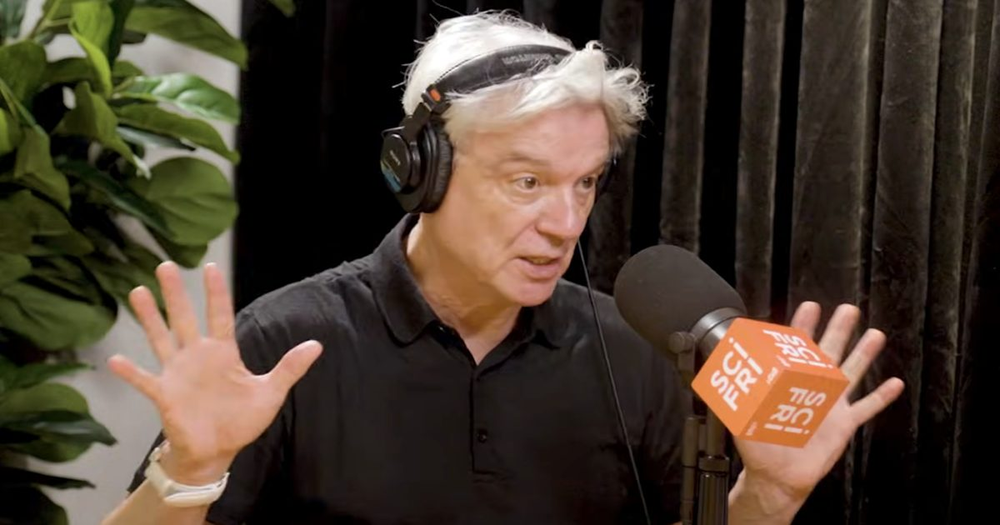

Новая книга Дэвида Бирна исследует странную загробную жизнь хороших идей: от картин Вермеера до римского бетона и темной материи
Дэвид Бирн всегда будет наиболее широко известен как соучредитель и фронтмен Talking Heads.
Это может считаться одним из величайших достижений любого художника — по крайней мере, для многих читателей «Открытой культуры» — но иногда это должно расстраивать самого человека.
Talking Heads распались 35 лет назад, …